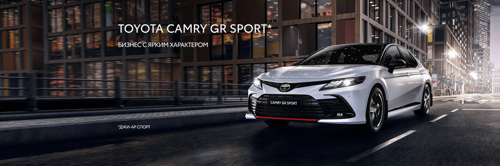

Toyota Motor Corporation
Качество и надежность Toyota
Во всем мире автомобили Тойота пользуются популярностью у покупателей благодаря их качеству и надежности
Но, как в 60-ые годы прошлого века, компания Тойота сумела производить серийные автомобили, которые
качественнее и надежнее американских?
Как это не парадоксально звучит, но создание качественного и надежного автомобиля не было целью компании
Тойота. Тойота искала новый подход к организации производства автомобилей, так как не могла себе
позволить массового производства, как у Ford и GM.
Очень точно описал подход к организации деятельности в Тойоте бывший президент «Toyota Motor Corporation»
Фудзио Тё:
«Мы придаем огромное значение действиям и практике. Вокруг слишком много непонятного, поэтому мы говорим своим
сотрудникам: смелее, действуйте, пробуйте! Взявшись за дело, вы увидите, как мало вы знаете, и наделаете ошибок,
но вы исправите эти ошибки и переделаете уже готовое заново.